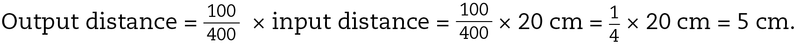
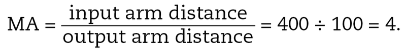
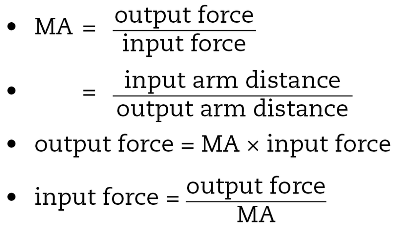
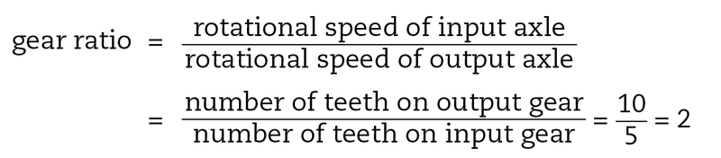
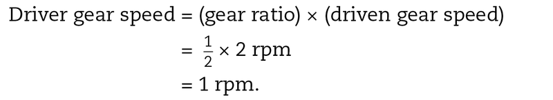
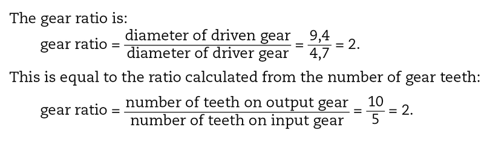

Mechanical advantage calculations
In this chapter, you will learn how to calculate the amount of mechanical advantage lever systems and gear systems give.
You will also learn how to calculate the speed with which a gear in a gear system will rotate if you know how many teeth each gear has, and the speed with which the other gear is rotating.

Calculate the mechanical advantage of a lever
In the previous chapter, you learnt that you can calculate a quantity to say exactly how big or smallthe mechanical advantage is. This quantity is a ratio.It is calculated by dividing the output force by the input force.
A ratio of 1 to 4 is written as 1:4. This is simply another way to write the fraction ¼.
You also use a ratio to write the scale of a drawing.
You also learnt that if the output force is greater than the input force, the mechanical advantage (MA) is greater than 1: MA > 1.
Look at the lever in Figure 2. This lever is making the output force bigger, so you can say that it is giving us a mechanical advantage. There are two "arms" on a lever: the input arm and the output arm. The lever below shows the input arm in blue and the output arm in red.
The input arm is sometimes called the "effort arm".
The "output arm" is sometimes called the load arm.
Calculations about a lever
On the lever above, the input arm is 40 cm long and the output arm is 10 cm long. The input arm on this lever has been moved up by 4 cm. Study the picture and then answer the questions.
1. When the input arm is moved up by 4 cm, how far does the output arm move down?
2. When the input arm is moved up by 2 cm, how far does the output arm move down?
3. How far do you think the output arm will move if the input arm was moved up by 12 cm?
4. Now you can confirm what you have already worked out. Use the values in Figure 2 to calculate the ratio of the length of the output arm to the length of the input arm.
5. Use the values in Figure 2 to calculate the ratio of the output distance to the input distance.
6. Calculate the ratio of the output distance to the input distance when the input distance is 2 cm. Use your answer from Question 2 above to help you.
7. Calculate the ratio of the output distance to the input distance when the input distance is 12 cm. Use your answer from Question 3 above to help you.
8. What can you say about the value of all of these ratios?
The ratio of input arm and output arm in levers
If the input arm is 400 cm long and the output arm is 100 cm long, then the output distance will always be:
If you lifted this lever by 20 cm, then:

This lever gives you a mechanical advantage because the input distance is larger than the output distance. We know that a lever with a larger input distance and a smaller output distance will give a mechanical advantage, so we can say that:
|
Input distance ÷ output distance = length of input arm ÷ length of output arm = mechanical advantage (MA) |
But we also know that: Input distance ÷ output distance = output force ÷ input force = mechanical advantage (MA). |
The ratio input arm distance : output arm distance is the same as the ratio output force : input force, and this is the mechanical advantage.
A lever with an input arm 400 cm long and the output arm 100 cm long will give a mechanical advantage of:

This means that the output force will always be four times larger than the input force; and the input force will always be four times less than the output force.
Consider the force needed to keep a weight of 20 kg from falling due to gravity. If this weight is on the output side of the lever discussed above, then what weight is needed on the input side of the lever to balance it?
Weight on input side = ¼ × 20 kg = 5 kg
Mechanical advantage

Calculations about a lever
Look at the lever in Figure 3. The lever is pushed down to crush a can.
1. How do you know that this lever will crush a can more easily than by hand?
2. With the can in the position shown, calculate the mechanical advantage that this lever will give.
3. If you need an output force of 20 "units of force"to crush the can, how much input force doyou need?
Length can be measured in units of metres, and mass can be measured in units of kilograms.
You will later learn in physics about how force is measured in units of "Newtons". But for the moment, you can call it "units of force", or "units".
4. The designer decides to make it even easier to crush the can. She moves the can closer to the fulcrum. This reduces the output arm to 15 cm. Recalculate the mechanical advantage of the lever.
5. Recalculate the new input force needed to crush the can with an output force of 20 units.
Calculate the distance advantage of a lever
Look at the lifting system in Figure 4. It uses a hydraulic cylinder for the input force. It is a system that could be used for lifting an engine out of a motorcar.
The lifting lever at the top is a third-class lever, because the input is between the fulcrum and the output.
A third-class lever always gives a distance advantage. It never gives a mechanical advantage.
1. How long is the input arm on this lever?
2. How long is the output arm?
3. Calculate the mechanicaladvantage that this lever gives.
4. Explain what this MA value tells you about the output and input forces.
5. A person wants to use this system to lift an engine out of a car. He needs the engine to be lifted by 90 cm. How far will the hydraulic cylinder at the input need to move for the engine to be lifted 90 cm at the output?
6. If the system is designed to lift objects by 180 cm, how far does the hydraulic cylinder need to move at the input?
Calculate the speed advantage of gears
The gear ratio
The gear ratio, which is also called the speed ratio or sometimes the velocity ratio, tells you how the speed of a driven gear will be changed by a driver gear.
Look at the two meshed gears in Figure 5. The driver or input gear has 5 teeth. The driven or output gear has 10 teeth.
- If the driver moves one revolution, it pushes the 5 teeth on the driven gear.
- If the driver gear moves by 2 revolutions, then 10 of the driven gear's teeth are moved. So the driven gear moves 1 revolution. Two driver revolutions give 1 driven gear revolution. So the turning speed of the driven gear is ½ the turning speed of the driver gear. The speed ratio, which is the same as the gear ratio, is1 : 2 or ½.
- If the driver gear revolves 10 times, then the driven gear will only revolve 5 times.

Calculations using the gear ratio
The speed of a turning wheel is measured in revolutions per minute, or rpm. So if the driver gear is turning around twice every second, it has a speed of 2 rpm. A speed of 2 rpm on this system will give a speed of 1 rpm on the driven gear.
rpm stands for "revolutions per minute".
The gear ratio can be used to work this out:

The speed ratio and mechanical advantage
If a gear system gives a speed advantage because of its gear ratio, then it will give you a mechanical disadvantage. This means that if a driven gear revolves faster than its driver gear, it gives less turning output force to the machine.
If a driven gear revolves slower than its driver gear, it gives more turning output force to the machine.
Speed advantage
When a driven (input) gear makes the driver (output) gear rotate faster, then the gear system gives a speed advantage.
Calculations
1. The gear system in Figure 5 has 5 teeth on the driver gear and 10 teeth on the driven gear. Calculate the rpm of the driven gear if the driver gear rotates at 1 500 rpm.
2. If a driver gear has 15 teeth and a driven gear has 60 teeth, calculate the gear ratio.
3. Consider a gear system where the driver gear has 25 teeth and the driven gear has 15 teeth.
(a) If the driver gear rotates at 100 rpm, calculate the speed of the driven gear.
(b) What can you say about the output turning force at the driven axle compared to the input turning force at the driver axle? How does that change in this system?
Using the gear diameters to calculate the gear ratio
The easiest way of calculating the speed of a gear system is from the number of teeth on the gear wheels.
However, there is another way of calculating the speed of a gear system:
- If a gear wheel is small, it will have a small number of teeth and its diameter will be small.
- If a gear wheel is large, it will have more teeth and its diameter will be larger.
In Figure 5, the diameter of the large driven gear is 9,4 cm and the diameter of the small driver gear is 4,7 cm.
Note: The diameters are measured for the dashed circles in Figure 5, since those circles show where the gear teeth make contact.

More calculations for you to do

1. A starter motor of a car has a driver gear with a diameter of 4 cm. It drives a large gear connected to the crankshaft of the engine with a diameter of 60 cm. Calculate the gear ratio of the starter-motor system of this car.
2. If the starter motor turns at 3 600 rpm, calculate the speed that the engine turns when the car starts.
3. Do you think the turning output force that makes the engine turn is greater than, or less than, the turning input force of the electric starter motor?
Next week
Next week, you will learn how to draw gear systems. You will also write design briefs for gear systems with an exact speed advantage and an exact mechanical advantage.